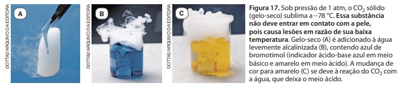
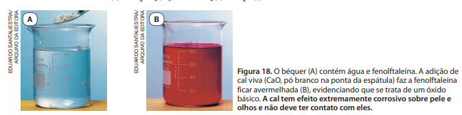
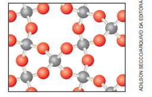

7.Óxidos
Óxidos são uma ampla categoria de substâncias que incluem desde subs‑ tâncias comuns em nosso cotidiano até compostos bastante específicos usados em pesquisas de ponta (Fig. 16). Um óxido é um composto químico formado por apenas dois elementos químicos, no qual o oxigênio é o mais eletronegativo.
Nos óxidos moleculares, a ligação entre o oxigênio e o outro elemento é covalente, constituindo moléculas. Podemos citar como exemplos NO (monó‑ xido de nitrogênio), NO2 (dióxido de nitrogênio), CO (monóxido de carbono), CO2 (dióxido de carbono), SO2 (dióxido de enxofre), SO3 (trióxido de enxofre), N2O3 (trióxido de dinitrogênio), N2O5 (pentóxido de dinitrogênio) e P2O5 (pentóxido de difósforo). O SiO2 (dióxido de silício) é um sólido macromolecular em cujo cristal cada silício está ligado a quatro oxigênios e cada oxigênio, a dois silícios. É o óxido constituinte do quartzo e da sílica.
Nos óxidos iônicos, o oxigênio encontra ‑se como ânion, frequentemente O2– (denominado íon óxido), e o elemento a ele ligado, como cátion. Exemplos são Li2O (óxido de lítio), Na2O (óxido de sódio), K2O (óxido de potássio), MgO (óxido de magnésio), CaO (óxido de cálcio), BaO (óxido de bário), Al2O3 (óxido de alumínio), FeO (óxido de ferro(II)) e Fe2O3 (óxido de ferro(III)).
As propriedades dos óxidos são muito diversas e vamos comentar algumas
que são de interesse para o presente estudo. Os óxidos ácidos, como CO2, SO2,
SO3, NO2, N2O3, N2O5 e P2O5, reagem com água, resultando em solução ácida
(Fig. 17). Um exemplo pode ser assim equacionado:
CO 2 (g) + 2 H 2O (l) → H 3O + (aq) + HCO3
–
(aq)
Tais compostos também reagem com bases, formando sal e água:
CO2 (g) + 2 NaOH (aq) → Na2CO3 (aq) + H2O (l)

Os óxidos básicos, como Li2O, Na2O, K2O, MgO, CaO e BaO, reagem com
água, produzindo solução básica (Fig. 18). Por exemplo:
CaO (s) + H2O (l) → Ca2+
(aq) + 2 OH–
(aq)
Esse tipo de óxido reage também com ácidos, formando sal e água:
CaO (s) + H2SO4 (aq) → CaSO4 (s) + H2O (l)

Os óxidos neutros, como CO, NO e N2O, não apresentam tendência a reagir com água, ácidos ou bases, nas condições ambientes de temperatura e pressão (25 °C e 1 atm).
Exercícios
28. Na fabricação de panelas de vidro, são usadas as matérias ‑primas representadas por SiO2, B2O3, Na2CO3 e CaCO3. Explique quais desses compostos são óxidos e quais não são, argumentando por quê.
29. Dióxido de carbono (gás carbônico) e óxido de cálcio (cal viva) diferem em alguns aspectos.
- a. Qual deles é constituído de moléculas? Qual é a com‑ posição dessas moléculas?
- b. Qual é iônico? De que íons é constituído?
- c. Qual confere caráter ácido e qual confere caráter al‑ calino a uma solução aquosa? Justifique elaborando equações químicas.
Informações para as atividades 30 e 31:
Os dois óxidos de nitrogênio mais significativos como
poluentes são o óxido nítrico [monóxido de nitrogênio], NO,
e o dióxido de nitrogênio, NO2, coletivamente representados por NOx. Eles tendem a entrar na atmosfera
como NO,
e processos fotoquímicos [induzidos pela luz] atmosféricos
podem transformar NO em NO2. Reações subsequentes
podem resultar na formação de sais corrosivos do tipo
nitrato ou de ácido nítrico, HNO3. [...] O óxido de enxofre,
SO2, é um produto da reação de queima de combustíveis
que contêm enxofre (especialmente carvão) e também
pode ser emitido na atmosfera em gases vulcânicos. Parte
desse dióxido de enxofre é convertida na atmosfera a ácido
sulfúrico, principal responsável pela precipitação ácida.
Fonte: MANAHAN, S. Environmental Chemistry. 11. ed.
Boca Raton: CRC Press, 2022. p. 207. (Tradução dos autores.)
Pesquisando sobre reações de óxidos, uma estudante
encontrou as seguintes equações:
- I. Na2O (s) + H2O (l) → 2 Na+ (aq) + 2 OH− (aq)
- II. K2O (s) + H2O (l) → 2 K+ (aq) + 2 OH− (aq)
- III. S (s) + O2 (g) → SO2 (g)
- IV. 2 SO2 (g) + O2 (g) → 2 SO3 (g)
- V. SO 2 (g) + 2 H 2 O (l) → H 3 O + (aq) + HSO 3 – (aq)
- VI. SO 3 (g) + 3 H 2 O (l) → 2 H 3 O + (aq) + SO 4 2– (aq)
30. A 1 atm e 25 °C, o pH da chuva em locais não poluídos é
5,6, o que é atribuído à reação entre CO2 do ar e a água
da chuva, assim equacionada:
CO 2 (g) + 2 H 2O (l) → H 3O + (aq) + HCO3
–
(aq)
- a. Pensando estritamente no pH mencionado, essa chuva
é ácida, neutra ou alcalina?
- b. Em Ciências da Natureza, o termo “chuva ácida” é em‑ pregado para designar uma chuva que seja mais ácida que a mencionada, o que pode decorrer da presença de certos poluentes. O que se pode, então, afirmar sobre o pH de uma precipitação atmosférica considerada chuva ácida? Que ácidos, presentes na chuva em decorrência de poluição, acarretam o fenômeno?
31. Escolha, entre as equações químicas apresentadas, as
que possibilitem justificar os fatos listados a seguir:
- a. O surgimento do poluente dióxido de enxofre na atmos‑
fera se deve à queima de combustíveis fósseis, como
carvão mineral e derivados de petróleo, que contêm
enxofre como impureza.
- b. O dióxido de enxofre, por oxidação na atmosfera,
converte ‑se em outro poluente, que acarreta a for‑
mação de ácido sulfúrico na chuva.
- c. Além da representação NOx, que designa óxidos po‑
luentes de nitrogênio, alguns textos técnicos utilizam
SOx para representar dois óxidos de enxofre poluentes.
- d. Cinzas, que contêm óxido de potássio e óxido de sódio, produzem meio alcalino se forem misturadas com água. Por isso, cinzas são perigosas em contato com a pele e os olhos, já que reagem com a umidade neles existente.
32. O monóxido de carbono (CO) é um poluente que não afeta a acidez da chuva, mas é muito tóxico. Pesquise a razão dessa toxicidade e elabore uma lista de ações individuais que você deve tomar para não ser intoxicado por ele.
33.(Fuvest‑SP) A figura a seguir traz um modelo da estrutura
microscópica de determinada substância no estado sólido,
estendendo‑se pelas três dimensões do espaço. Nesse
modelo, cada esfera representa um átomo e cada bastão,
uma ligação química entre dois átomos.

A substância representada por esse modelo tridimensio‑ nal pode ser
- a. sílica, (SiO2)n.
- b. diamante, C.
- c. cloreto de sódio, NaCl.
- d. zinco metálico, Zn.
- e. celulose, (C6H10O5)n.
34. (Uerj) Na atmosfera artificial do interior das cápsulas espa‑
ciais, o oxigênio consumido pelos astronautas é renovado
a partir de reservas de O2. Para manter a concentração do
gás produzido pelo metabolismo energético dos tripulan‑
tes em níveis não tóxicos, o ar artificial dessas cápsulas
precisa, ainda, ser continuamente purificado. Uma das
substâncias que podem ser utilizadas na purificação do
ar, com esse objetivo, é:
- a. HCl.
- b. K2SO4.
- c. H2CO3.
- d. NaOH.